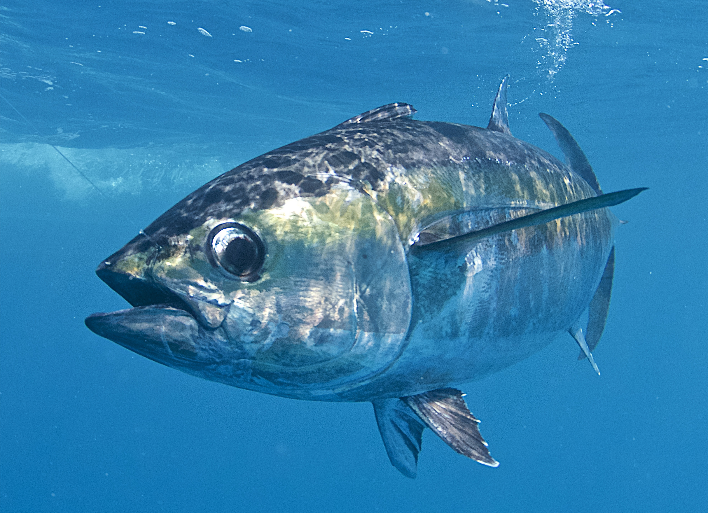

Waterbook
Waterbook предоставляет возможность
поддерживать постоянную связь и общение
c друзьями под водой.
Вход
W
aterbook - Социальная сеть подводного мира
Главная страница

tuna202
--выберите статус--
Онлайн
Не беспокоить
Невидимый
Редактировать профиль
Друзья
Выйти